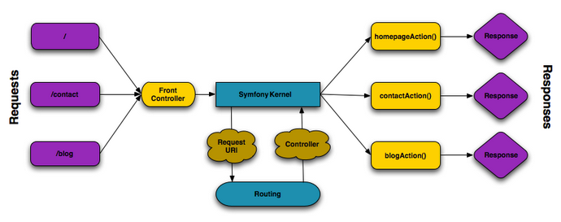

Pour une application web, créer une page c’est permettre à un certain public d’accéder à une ressource (ou service) web. Pour cela, plusieurs activités sont concernées:
-
permettre à l’application web de répondre à une requête HTTP en définissant une route (portion terminale d’un URL) pour la ressource en question
-
définir via quelle méthode d’accès HTTP cette ressource sera accessible (GET, POST, PUT, HEAD, …)
-
concevoir le contrôleur associé à la ressource : une méthode d’une classe
Controller -
définir la structure de la resource dynamique soit dans le contrôleur, soit via un template de vue (twig par exemple)
Si cette requête est de type GET, elle correspond à une demande de resssource distante.
Cela peut correspondre à une donnée statique (un fichier placé sur le serveur) ou dynamique (construite pour l’occasion).
Nous nous plaçons dans le cas où l’application répondra par du contenu dynamique HTML.
Une application web n’expose jamais directement ses templates de vue de ses ressources dynamiques (pas de lien direct vers un script de vue)
Dans le cadre de symfony, un contôleur central (front controller) réceptionne les requêtes HTTP et les traduit en appel de méthodes d’instance d’une classe contrôleur (controller)

Comme le montre ce schéma, le développeur doit mettre à disposition du framework des méthodes.
Attention, le schéma ne montre que les méthodes (blogAction, contactAction et homepageAction),
mais ne donne pas le nom de la (ou des) classes où elles sont définies.
|
La liaison méthode ←→ URL peut se réaliser soit par un fichier de configuration, soit via des annotations dans le code.
Nous choisirons cette dernière option, bien pratique, mais avant de concevoir une telle classe, vous devrez ajouter des composants à votre
application. Le plus souple pour cela est de demander à composer de le faire pour vous :
$ cd your-project/ $ composer require annotations
Il serait également préférable d’installer des plugins à votre IDE : avec PhpStorm,
aller File→Settings puis chercher plugin symfony et les installer.
Voici un exemple de classe contrôleur, extrait de la documentation : Symfony - page_creation.html
<?php
// src/Controller/LuckyController.php (1)
namespace App\Controller; (2)
use Symfony\Component\HttpFoundation\Response; (2)
use Symfony\Component\Routing\Annotation\Route;
class LuckyController (3)
{
/**
* @Route("/lucky/number") (4)
*/
public function number() (5)
{
$number = mt_rand(0, 100);
return new Response( (6)
'<html><body>Lucky number: '.$number.'</body></html>'
);
}
} (7)| 1 | un comment à destination du lecteur, afin d’identifier le chemin de sauvegarde |
| 2 | les librairies dont dépend le code ci-dessous (Classe et annotation) |
| 3 | une classe normale PHP Objet |
| 4 | définition de la logique d’appel (extrait terminal URL de l’application) |
| 5 | une méthode public; Elle sera automatiquement appelée via le front controller. |
| 6 | retourne un instance de Response (avec du contenu HTML) |
| 7 | le marqueur de fin de traitement PHP (?>) est volontairement absent afin de conserver le sens librairie d’une classe Controller. |
Voici un extrait des spécifications de la fonction http://php.net/manual/fr/function.mt-rand.php
int mt_rand ( int $min , int $max )
Valeurs de retour
Un entier aléatoire compris entre min (ou 0) et max inclusif, ou FALSE si le paramètre max est inférieur à min.http://localhost:8000/lucky/number
Rendu par une logique de vue (archtecture MVC)
Concevoir la logique de présentation (HTML and Co) dans un contrôleur n’est pas une bonne pratique.
Fort heureusement Symfony vient avec Twig : un langage de vue puissant et plaisant à utiliser.
Twig est proposé en tant que composant, qu’il faut installer :
$ cd your-project/ $ composer require twig
Il faut ensuite s’assurer LuckyController hérite de la classe de base des contrôleurs Controller:
// src/Controller/LuckyController.php
// ...
+ use Symfony\Bundle\FrameworkBundle\Controller\Controller; (1)
- class LuckyController
+ class LuckyController extends Controller (2)
{
// ...
}| 1 | déclaration de la dépendance (un import) |
| 2 | la classe LuckyController hérite de Controller |
Et faire en sorte que la méthode contrôleur délègue la vue à une page twig :
// src/Controller/LuckyController.php
// ...
class LuckyController extends Controller
{
/**
* @Route("/lucky/number")
*/
public function numberAction()
{
$number = mt_rand(0, 100);
return $this->render('lucky/number.html.twig', array( (1)
'number' => $number,
));
}
}| 1 | appel à la méthode héritée (render) en lui passant le nom d’une vue, suivi d’un tableau associatif, appelé aussi dictionnaire, composé de couples (nom_variable⇒valeur). Dans notre cas, le tableau n’a qu’un seul élément ('number'⇒ $number), qui sera passé à la vue. La vue aura accès à ces valeurs directement par le nom des clés définis dans ce dictionnaire. |
Les fichiers de vue seront cherchés par symfony, par défaut, dans le dossier templates à partir de la racine du projet (ce dossier est automatiquement crée lors de l’installation de twig).
Template de base de l’application
C’est un fichier qui détermnine la structure HTML/CSS générale de votre application. La plupart du temps un tel template se base sur un modèle proposé par des frameworks CSS (bootstrap, semantic-ui, …). Il est parfois acheté auprès de sociétés spécialisées.
Exemple de template simple, from scratch, créé par le composant twig lors de son intégration dans ce projet (symfony >= 4)
<!DOCTYPE html>
<html>
<head>
<meta charset="UTF-8">
<title>{% block title %}Welcome!{% endblock %}</title>
{% block stylesheets %}{% endblock %}
</head>
<body>
{% block body %}{% endblock %} (1)
{% block javascripts %}{% endblock %}
</body>
</html>| 1 | Définition d’un block nommé body (ne pas confondre avec <body>).
Les vues héritant pouvent alors redéfinir ces blocks. |
Ce template de base définit 4 blocks : title, stylesheets, body et javascripts.
Pour répondre au besoin de notre méthode numberAction de LuckyController, nous
devons créer une nouvelle vue dans le dossier templates/lucky, nommée number.html.twig (lucky est un dossier qu’il faut créer) :
{# templates/lucky/number.html.twig #} (1)
{% extends 'base.html.twig' %} (2)
{% block title %}Devine{% endblock %} (3)
{% block body %} (4)
<h1>Your lucky number is {{ number }}</h1>
{% endblock %}| 1 | un commentaire twig qui vous informe, vous lecteur, de la localisation de ce fichier |
| 2 | cette vue hérite d’un template qui définit les blocs title et body |
| 3 | redéfinition du bloc title |
| 4 | redéfinition du bloc body |
Vous trouverez la syntaxe twig ici : https://twig.symfony.com/